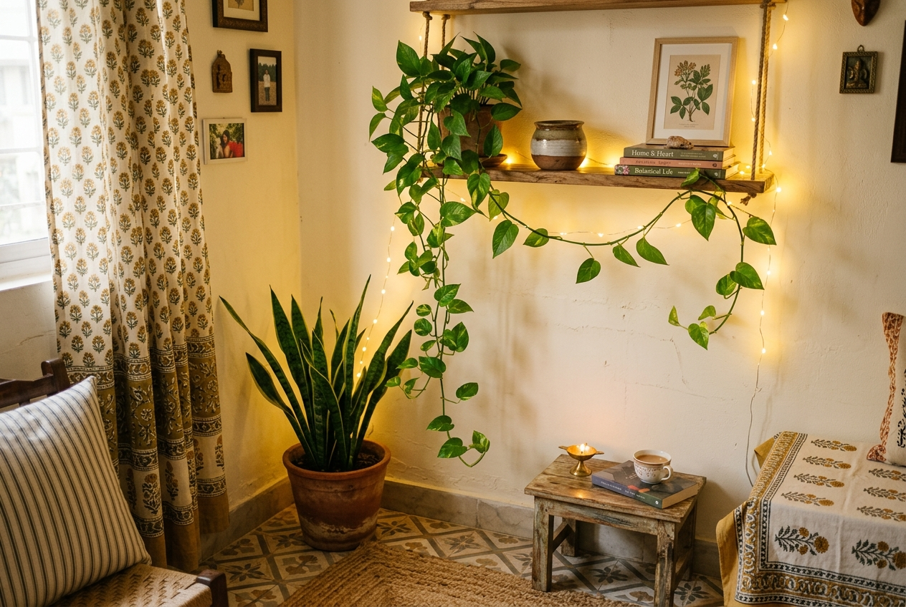
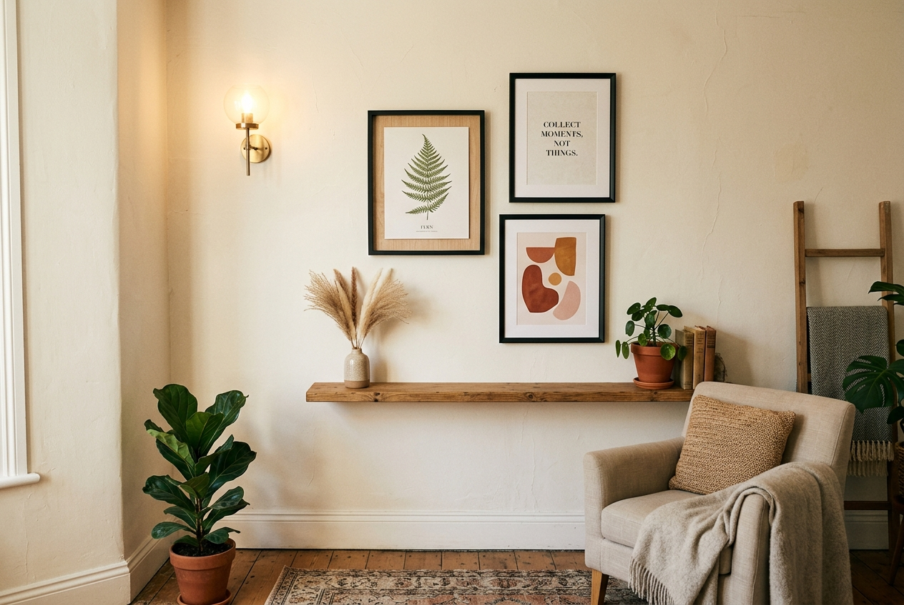

Let’s be honest.
Every time you open Instagram or Pinterest, you see those impossibly beautiful rooms — soft neutral palettes, trailing plants, warm fairy lights, artfully stacked books — and your first thought is:
“This must have cost a fortune.”
But here’s what no one tells you: most of those rooms weren’t expensive. They were intentional.
The secret to an aesthetic room isn’t the price tag — it’s the edit. It’s knowing what to keep, what to remove, and where to put your energy (and your Rs 500).
I’ve spent a lot of time thinking about spaces — small ones, rented ones, hand-me-down furniture ones. And I’ve come to believe that a beautiful room is available to everyone, regardless of budget.
So this one’s for the students, the renters, the people with Rs 2,000 in their account who still want their room to feel like a soft exhale at the end of the day. These are practical, honest, budget room decor ideas that have actually worked — and they’ll work for you too.
“A beautiful room is not about how much you spend — it’s about how clearly you see.”
📄 What We’ll Cover
- Start with a Ruthless Declutter (Rs 0)
- Fix Your Lighting — It Changes Everything
- Add One Plant (Rs 50–Rs 200)
- Create a Wall Moment (Rs 200–Rs 800)
- Use Textiles Wisely (Rs 300–Rs 1,200)
- Organise What You Already Have
- Add Scent — The Forgotten Decor Element
- Your Desk Setup Matters More Than You Think
- Where to Shop for Budget Decor in India
- The Real Rs 5,000 Budget Breakdown
- Frequently Asked Questions
1. Start with a Ruthless Declutter (Rs 0)
Before you buy a single thing, take everything out of your room and only bring back what you love or actually need.
This is the single most transformative thing you can do for a budget room makeover — and it costs absolutely nothing.
Most rooms don’t need more things. They need fewer of the wrong things.
The broken chair in the corner, the three bags you don’t use, the random objects on your desk — they’re creating visual noise that no decor can fix. You could spend Rs 10,000 on beautiful things and they would still get lost in that chaos.
Decluttering is how you give your space room to breathe. And breathable spaces look aesthetic instantly — no shopping required.
🌿 The One-Surface Rule
Pick any surface in your room — desk, nightstand, shelf. Now allow a maximum of 3–5 objects on it. A plant, a candle, a book, maybe a small tray. That’s it. The breathing room around objects is what makes a space feel curated, not cluttered.
Quick action: Right now, pick one surface in your room. Remove everything. Put back only three things you genuinely love. Notice how it feels. That feeling? That’s what we’re chasing throughout this entire guide.
2. Fix Your Lighting — It Changes Everything (Rs 300–Rs 800)
If there is one thing I would tell every single person trying to make their room look aesthetic on a budget — it’s this:
Fix. Your. Lighting.
Harsh white overhead tube lights are the enemy of a cozy, aesthetic room. They flatten everything. They make your room look like a hospital waiting area, no matter how nice your stuff is.
Swap them for warm-toned alternatives — and watch your room transform completely. Same furniture, same walls, same everything — but with warm light, it suddenly feels intentional and soft.
- Fairy lights / string lights (Rs 150–Rs 300): Drape them along your headboard, window frame, or bookshelf. Warm white only — avoid coloured LEDs if you want that aesthetic look. This is probably the highest-impact, lowest-cost change you can make.
- A small table lamp with warm bulb (Rs 300–Rs 600): A lamp on your desk or bedside table creates a pool of golden light that changes the entire mood. You can find gorgeous options on Meesho and Flipkart under Rs 500.
- Candles (Rs 100–Rs 200): Even unlit, candles add warmth to a shelf or surface. Lit, they create a feeling that’s genuinely hard to replicate. Try one on your desk while you study — the whole vibe shifts.
- LED strips behind furniture (Rs 200–Rs 400): Stick warm-toned LED strips behind your bed headboard, monitor, or shelves for a soft glow effect that looks incredibly aesthetic in person and in photos.
Good lighting doesn’t just make your room look better — it actually makes you feel better inside it. This is science, not just style.


3. Add One Plant (Rs 50–Rs 200)
There is something almost magical about having a living thing in a room.
A single plant can do what an entire shelf of decor sometimes cannot — it brings life, texture, and a sense of calm that feels completely natural. When people walk into a room with plants, they immediately feel like the space is cared for. And cared-for spaces always look aesthetic.
The best part? You don’t need a rare or expensive plant. Some of the most beautiful rooms use the most basic ones:
- Money plant (Pothos): Trails beautifully, nearly impossible to kill, available everywhere for Rs 30–Rs 50. Place it on a high shelf and let it trail down — it looks stunning.
- Snake plant (Sansevieria): Architectural, sculptural, perfect for dark corners. Loves neglect. Around Rs 80–Rs 150. This is the plant for people who forget to water things.
- Aloe vera: Useful and beautiful. Rs 50–Rs 100 at any local nursery. Great on a windowsill with some sunlight.
- Peace lily: Elegant white flowers, air-purifying, and thrives indoors. Around Rs 100–Rs 180.
Put your plant in a simple terracotta pot or even an old ceramic mug. Place it near your window or on your desk. That one green thing will change how the whole room breathes.
✨ The Free Plant Trick
Take a cutting from a money plant and place it in a glass bottle or jar with water. It will grow roots in 2–3 weeks and looks absolutely stunning on a windowsill. Cost: Rs 0. Effort: minimal. Result: 10/10. You can propagate 5–6 plants this way for free from one original plant.
4. Create a Wall Moment (Rs 200–Rs 800)
You don’t need to paint your walls (especially if you’re renting) to make them interesting.
A “wall moment” is simply a curated arrangement that gives your eye something beautiful to land on when you walk into the room. It could be one thing or five things — but it should feel intentional.
Here are three approaches depending on your budget:
Option A: The Gallery Wall (Rs 200–Rs 500)
Print 3–5 images you love — quotes, travel photos, aesthetic art prints — at your local photo studio (Rs 20–Rs 40 each for 4x6 prints). Put them in simple black frames from Daiso, local markets, or online. Arrange them asymmetrically on one wall. Done. It looks expensive. It cost Rs 200.
Pro tip: Before you hammer anything, lay the frames on your floor and arrange them first. Take a photo. Then replicate it on the wall. Saves you from unnecessary holes everywhere.
Option B: The Single Statement Piece (Rs 100–Rs 300)
Find one large print, a woven wall hanging, or a fabric panel. Centre it above your bed or desk. One well-placed piece often speaks louder than ten random ones. The key is scale — a too-small piece on a large wall looks lost. Go bigger than you think you need.
Option C: The Nature Wall (Rs 0–Rs 50)
Collect dried flowers, leaves, or feathers. Press them between heavy books for a few days. Display them in a simple frame or tape them artfully to the wall using washi tape. Free, organic, and genuinely beautiful. You can also pin up a piece of fabric or a saree as a backdrop — it’s very Pinterest and costs almost nothing.
“Your room doesn’t have to look like a showroom. It just has to feel like you.”
5. Use Textiles Wisely (Rs 300–Rs 1,200)
Textiles — throws, cushions, curtains, rugs — are the fastest way to change the entire vibe of a room without touching the furniture.
One warm-toned throw draped casually over a plain chair. Two cushions in complementary textures on your bed. A simple cotton curtain instead of the old plasticky ones. A small jute mat under your desk area.
These small shifts are what make a room feel lived-in in the best possible way — cozy, layered, and human.
- A textured throw blanket (Rs 350–Rs 600): Drape it casually over your chair or the edge of your bed. Don’t fold it neatly — that’s the trick. Warm terracotta, sage green, cream, or dusty rose tones work beautifully.
- 2–3 cushions with texture (Rs 150–Rs 300 each): Mix a plain one with a subtle woven pattern. Make sure they stay within your colour palette.
- Sheer curtains (Rs 200–Rs 500): They soften light beautifully and make any window look intentional. Hang them high and wide (above and beyond the window frame) to make your room feel taller and bigger.
- A small jute or cotton rug (Rs 400–Rs 800): Even a small rug under your bed or desk instantly defines the space and adds warmth to bare floors.
🌿 The Colour Rule for Budget Decor
Pick 2–3 colours for your entire room and stick to them. Not a strict rule — just a direction. Warm neutrals (cream, beige, terracotta) with one natural green works almost universally. It creates a feeling of coherence that makes even mismatched furniture look considered and intentional.
6. Organise What You Already Have (Rs 0–Rs 200)
This one is deeply underrated and almost completely free. And yes, it counts as decor.
Look at your books — are they stacked sideways? Stand them upright and arrange by colour or size. Look at your desk — does everything have a place? A small tray from your kitchen can corral loose items (pens, chargers, earphones) beautifully. Look at your wardrobe — even what’s visible matters.
Organisation is invisible decor. A tidy space always looks more aesthetic than a heavily decorated messy one. Every single time.
- Books arranged by colour or height on a shelf immediately look like a styled photo, not an accident.
- A small tray or bowl to collect desk clutter makes the chaos feel contained and intentional.
- Cable management: Use velcro ties or binder clips to tame charging cables. Messy cables ruin even the most beautiful desk setup.
- A dedicated “drop zone” near your door (a hook, a small basket) keeps bags and random items from spreading across your room.
Spend one afternoon on this. You’ll be genuinely surprised at how different the room looks — and you won’t have spent a single rupee.
7. Add Scent — The Most Underrated Decor Element (Rs 100–Rs 400)
Here’s something almost no budget room decor guide ever talks about: how your room smells is part of how it feels.
You can have the most beautiful room in the world, but if it smells musty or stale, the entire vibe collapses the moment someone walks in. On the flip side — a simple room that smells soft, clean, and warm feels luxurious even if it’s completely ordinary.
You don’t need expensive diffusers. Here’s what actually works on a budget:
- Agarbatti / incense sticks (Rs 30–Rs 80): Sandalwood, lavender, or jasmine. Light one in the morning while you tidy up. The ritual itself becomes part of how your room feels.
- Scented candles (Rs 150–Rs 350): Vanilla, amber, or earthy woody scents work beautifully for a cozy aesthetic. They also look gorgeous as decor when unlit.
- A small reed diffuser (Rs 200–Rs 400): Low-maintenance, continuous scent. Place it on your nightstand or bookshelf.
- Open windows + houseplants: Completely free. Fresh air and the subtle green scent of plants is genuinely better than most artificial fragrances.
Pick one signature scent for your room and stick with it. Over time, your brain will associate that scent with coming home and relaxing — and that’s what a truly aesthetic room is really about.
8. Your Desk Setup Matters More Than You Think (Rs 200–Rs 600)
If you’re a student or someone who works from home, you probably spend hours at your desk. And a well-styled desk is one of the quickest ways to make your room look both aesthetic and productive.
You don’t need a Rs 15,000 monitor or a gaming chair. You need intention.
- Clear your desk completely and only put back what you use daily. A clutter-free desk looks 10x more aesthetic immediately.
- One small plant or a propagated money plant in a jar on the corner of your desk adds life without taking up space.
- A desk lamp with warm light (Rs 300–Rs 500) instead of the overhead light when you work. Warmer light at eye level is better for focus, eye strain, and obviously — aesthetics.
- A small notebook and a pen you actually like: Sounds trivial, but visible stationery that looks nice is genuinely part of the aesthetic. A beautiful journal on your desk says a lot about a person.
- Cable management: Tie your cables. Hide them where you can. A clean desk with hidden cables looks instantly more premium, every single time.
“A well-styled desk isn’t just pretty — it quietly tells you that you take your work and your space seriously.”
9. Where to Shop for Budget Room Decor in India
You genuinely don’t need to go to expensive home decor stores. Here’s where to actually find good things on a budget:
Meesho
Incredible prices on cushion covers, curtains, fairy lights, trays. Always check reviews and photos first.
Local Sunday Market
Frames, pots, fabric, second-hand gems. Best place for unique, inexpensive finds you won't see anywhere else.
Local Nursery
Plants at a fraction of online prices. Ask about propagation cuttings — often free or Rs 10.
Flipkart / Amazon
Good for lamps, LED strips, and storage. Filter by lowest price + 4 stars and above.
Daiso
If there’s one near you — it’s a goldmine. Almost everything looks great and costs Rs 99.
Thrift Stores / OLX
Secondhand shops can have beautiful frames, lamps, and decor pieces at almost no cost.
One important rule of thumb: Never buy something just because it’s cheap. Only buy things you genuinely love. A room full of cheap things you’re indifferent to will never feel aesthetic. A room with fewer, chosen-with-care pieces always will.
The Real Rs 5,000 Budget Room Makeover Plan
Here’s exactly how I’d spend Rs 5,000 to completely transform a room — step by step, nothing fancy:
| Item | Where to Buy | Estimated Cost |
|---|---|---|
| Warm fairy lights (5 metres, warm white) | Meesho / local electronics shop | Rs 200 |
| One table lamp with warm bulb | Flipkart / local market | Rs 450 |
| One plant + terracotta pot | Local nursery | Rs 150 |
| 3 printed photos + simple black frames | Photo studio + local shop | Rs 300 |
| One throw blanket (terracotta or cream) | Meesho / Sunday market | Rs 500 |
| 2 cushion covers with texture | Meesho | Rs 350 |
| Sheer curtains (one window) | Meesho / fabric market | Rs 400 |
| Small decorative tray for desk | Daiso / Sunday market | Rs 150 |
| 2 scented candles | Local store / Meesho | Rs 180 |
| Woven wall hanging or art print | Meesho / Flipkart | Rs 300 |
| Incense sticks + holder | Any local kirana or gift shop | Rs 70 |
| Reserve for unexpected finds you actually love | Wherever you discover them | Rs 1,950 |
| Total | — | Rs 5,000 |
And that remaining Rs 1,950? Don’t spend it right away. Save it for when you find something you genuinely love — a beautiful mug at a local market, a secondhand book with a gorgeous cover, a little ceramic something that catches your eye.
The best rooms are built slowly, with intention. Not bought all at once in a panic shopping session.
“The most beautiful spaces aren’t the most expensive ones. They’re the most honest ones.”
The One Thing Nobody Tells You
Here’s the real secret to making your room look aesthetic on a budget:
Do it in stages. Don’t try to transform everything in one weekend.
Start with the declutter. Sit with it for a few days. Then fix the lighting. Notice how that changes things. Then add the plant. Each step builds on the last — and by the time you’ve worked through the list, your room will feel genuinely different.
Not because you spent a lot of money. But because every single thing in it is there on purpose.
Your room doesn’t need to look like a Pinterest board to feel like a sanctuary.
It just needs to feel like you — warm, thoughtful, and lived in with intention.
Start with one thing. Fix the lighting. Add a plant. Clear the clutter. Small changes, made with care, compound into something quietly extraordinary.
And it’s all available to you, right now, for a lot less than you think. 🌿